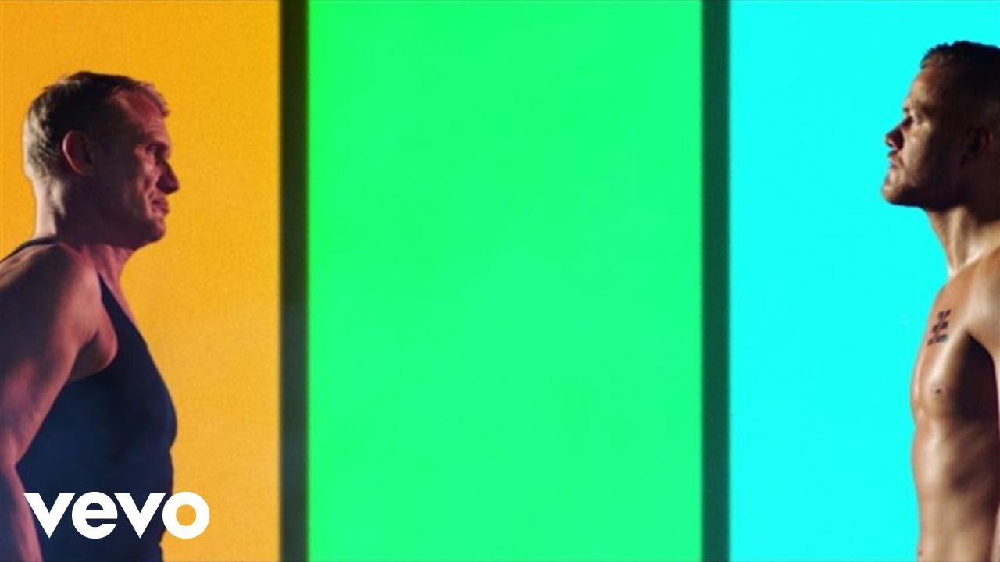
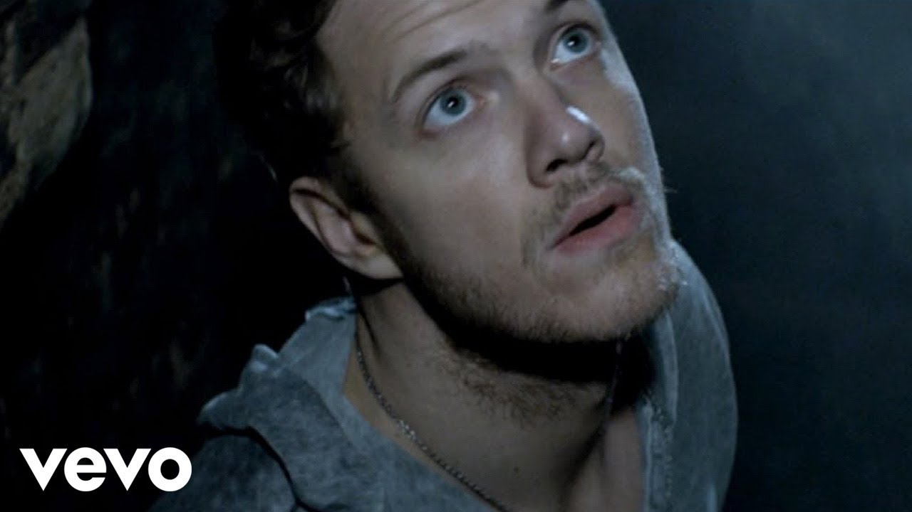

Believer

Youtube-video
"Believer" стала першим синглом з третього студійного альбому. Вона була написана Деном Рейнольдсом, Вейном Сермоном, Беном МакКі, Деніелом Платцманом та Джастіном Трантером і побачила світ 1 лютого 2017 року через Interscope Records.
"Believer" зайняла 4-е місце на американському Billboard Hot 100, ставши третім синглом групи після "Radioactive" і "Demons", що потрапив у верхню десятку у США. Вона також потрапила до першої десятки в Австрії, Канаді, Чехії, Франції, Італії, Польщі, Португалії та Швейцарії.
Пісня використовувалася у рекламі, наприклад, для Nintendo Switch, у різних трейлерах фільмів і телевізійних шоу. "Believer" отримала помітний приріст популярності після того, як прозвучала у фіналі першого сезону телесеріалу "Рівердейл"[1].
Вона стала п'ятою найпопулярнішою піснею 2017 року в Сполучених Штатах.
Thunder

Youtube-video
Thunder (укр. Грім) стала другим синглом з третього студійного альбому Evolve. Пісня отримала шалену популярність, і стала першим кліпом Imagine Dragons, який набрав більше мільярда переглядів на Youtube.
Трек також був використаним в рекламі Surface Laptop 2017 компанією Microsoft.
2 травня 2017 вийшов кліп для пісні на офіційному каналі Imagine Dragons на Youtube. Кліп зняли в місті Дубаї. Режисером відеокліпу став Джозеф Кан. Відео було знято в чорно-білих кольорах. Станом на грудень 2021 кліп набрав більше 1,75 млрд переглядів.
Radioactive

Youtube-video
Radioactive вперше представлена 2 квітня 2012. Пісня отримала премію Греммі в категорії «Найкраще рок виконання». Журнал Rolling Stone назвав сингл «Radioactive» найкращим рок-хітом року.
Вона вперше з'явилася 2 квітня 2012 року. Radioactive дебютувала в хіт-параді Billboard Hot 100 після релізу альбому "Night Visions" і довгий час знаходилася в нижній частині чарту. Тільки в квітні 2013 пісня потрапила на 7 місце (і пізніше 3). Пісня стала третьою піснею 2013 в Америці. Пісня 23 тижні (рекордний показник) була №1 в чарті Hot Rock Songs. Також був поставлений абсолютний рекорд по перебуванню в американському чарті Billboard Hot 100 - 87 тижнів.